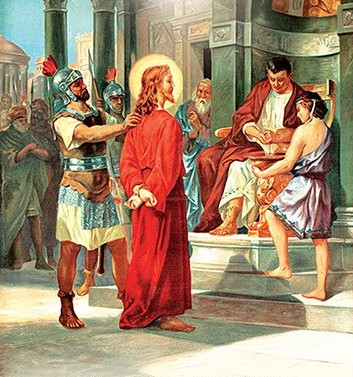

Stacja I
Jezus skazany na śmierć
Kłaniamy się Tobie, Panie Jezu Chryste, i błogosławimy Tobie,
Żeś przez Krzyż i Mękę swoją świat odkupić raczył.
Czytanie z Pisma Świętego
Piłat powiedział do Żydów: „Oto król wasz!” Oni zaś zawołali: „Precz! Precz! Ukrzyżuj Go!” Piłat rzekł do nich: „Czyż króla waszego mam ukrzyżować?” Odpowiedzieli arcykapłani: „Poza Cezarem nie mamy króla”. Wtedy więc wydał Go im, aby Go ukrzyżowano. (J 19, 14-16)
Rozważanie
Pan Jezus skazany na śmierć po to, aby mógł być wykreślony sprawiedliwy wyrok na mnie, aby mogła być zmazana moja wina, abym nie musiał ponosić odpowiedzialności za swoje własne i dobrowolne przestępstwa, abym mógł otrzymać Miłosierdzie Boże.
Panie Jezu, bądź uwielbiony za to, że chciałeś uchodzić w oczach całego świata za winnego po to, abym ja mógł poczuć się niewinnym. W ciszy nocy rozważam Twoją pokorę i przyjmowanie niesprawiedliwego wyroku.
Modlitwa
Jezu, proszę Cię o żal doskonały, pochodzący z miłości do Ciebie, abym mógł wymazać swoje winy. Naucz mnie przyjmować niesprawiedliwość w ciszy i zawierzeniu Tobie.
Któryś za nas cierpiał rany,
Jezu Chryste, zmiłuj się nad nami.